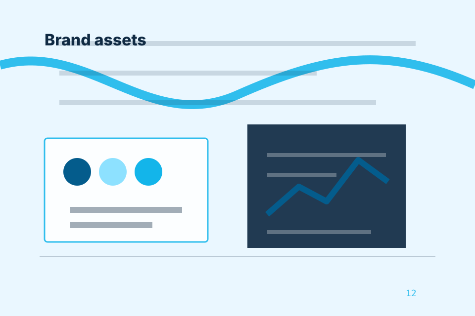

Cloud accounting dashboard
Accounting clarity with sky blue, rounded dashboards, and friendly admin paths for Accounting, Tax & Financial Administration.

An accounting command site with cloud-blue dashboards, deadline cards, plan comparison, and admin reassurance